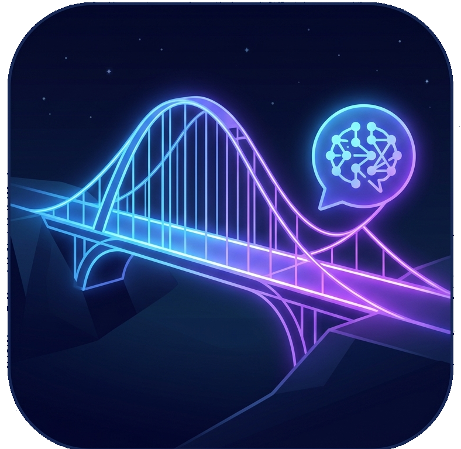

To enable private, secure local AI agents that can analyze databases and build code without exposing raw data to third-party monopolies.
Giving autonomous AI agents access to local workspaces and private databases is a massive compliance and security hazard, leaking sensitive records and PII to cloud providers. To avoid this, developers are forced to choose between data security risks, expensive cloud API billing loops, or running slow local models on costly hardware. Meanwhile, the smartest web models remain trapped and isolated in the browser.
DWN.Bridge is an open-source desktop application that builds a bridge between free web models (driven seamlessly in the background) and your local File System and Database.
No tokens. No subscriptions. Pure local execution power combined with the smartest web brains available.